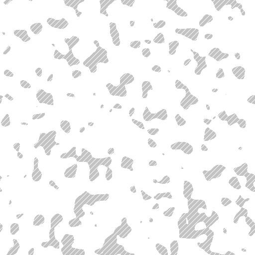

Figure 2 (draft). Baseline and candidate axial orientation, MOCK_HI_cube_L1234_v2
Axial orientation (deg, 0°≡180°). Hatched pixels invalid. Difference = smallest axial angle, clipped at 30°.




 0° ≡ 180°ILLUSTRATIVE MOCK DATA · synthetic, not a result
0° ≡ 180°ILLUSTRATIVE MOCK DATA · synthetic, not a result403 · NOT IN REVIEW SCOPE
Raw FITS data is not part of this review
The link you followed points to a source dataset. Reviewers can open only the published previews listed in your scope. No path, host or credential is shown here.
Next steps
- Go back to the 3 published previews.
- Ask the owner to publish another preview, or to widen the scope. Access is never granted automatically.